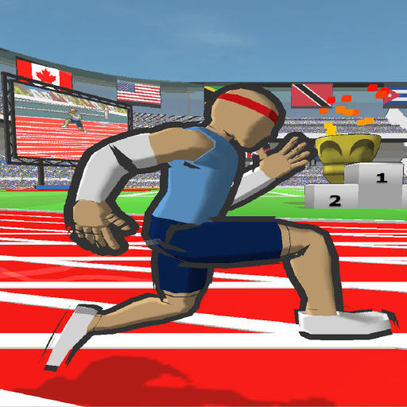

Speed Stars
평점: 4.2 (237표)
개발자: Luke Doukakis
출시: 2024년 11월
플랫폼: PC, 모바일, 태블릿
분류: 러닝 게임, 스포츠 게임, 캐주얼 게임

Speed Stars를 플레이하고 엘리트 스프린터가 되어 고속 레이스에서 도전적인 트랙을 정복하세요. 속도, 타이밍, 정확성, 리듬을 잘 다룬다고 생각하나요? 게임에서 실력을 시험하고 전력 질주로 시상대에 오를 수 있는지 확인해보세요.
Speed Stars 소개
Speed Stars는 단거리 스프린트의 세계를 경험할 수 있는 역동적인 육상 게임입니다. 정밀한 조작, 타이밍, 스피드감이 절묘하게 어우러져 있습니다. Speed Stars는 다양한 거리의 경주를 제공하며, 실력과 연습이 보상받는 구조입니다.
Speed Stars 게임플레이
Speed Stars는 리듬 기반의 레이싱 게임으로, 플레이어는 챔피언을 목표로 합니다. 스프린터를 조작하려면 키 또는 화면 가장자리를 번갈아 눌러 발 움직임을 재현합니다. 탭 리듬을 주자의 보폭에 맞춰 모멘텀을 유지하고 넘어지지 않도록 하는 것이 포인트입니다.
경주는 40m 단거리부터 상징적인 100m 스프린트까지 다양하며, 각 경주는 정확한 협응과 빠른 반응이 요구됩니다.
리플레이 및 고스트런 기능도 있어, 자신의 최고 기록이나 세계 상위 플레이어와 경쟁할 수 있어 경쟁심을 자극합니다.
Speed Stars의 주요 특징
미니멀하면서도 아름다운 비주얼 디자인과 만족스러운 물리 기반 움직임.
조작이 간단하고 배우기 쉬움.
실시간 리더보드로 전 세계 플레이어와 기록을 겨룰 수 있음.
슬로우 모션 리플레이로 자신의 플레이를 분석하고 개선 가능.
정기적인 의상 업데이트로 항상 신선한 플레이 경험 제공.
Speed Stars 언블록은 누구나 쉽게 시작할 수 있는 무료 스프린트 시뮬레이터입니다.
Speed Stars 플레이 방법: 상세 가이드
신호가 들리면 바로 출발
출발 총성이 들리면 경주가 시작됩니다. 최대한 빨리 출발하되, 공식 신호 전에 움직이면 플라잉이 되니 주의하세요. 완벽한 타이밍의 출발이 유리합니다.
번갈아 버튼을 눌러 달리고 속도 유지
번갈아 버튼을 누르거나 화면을 터치하면 주자의 한쪽 다리가 움직입니다. 보폭 리듬에 맞춰 타이밍 좋게 눌러야 합니다. 타이밍이 어긋나거나 급하게 누르면 속도가 느려지거나 넘어질 수 있습니다.
Speed Stars에서는 무작정 빠르게 누른다고 최고 속도가 나오는 것이 아닙니다. 리듬이 부드러울수록 선수의 퍼포먼스가 좋아집니다.
스태미나 관리
화면 오른쪽 상단의 초록색 바가 스태미나를 나타냅니다. 빠르게 달릴수록 더 많이 소모됩니다! 너무 빠르게 스프린트하면 스태미나가 고갈되어 최고 속도를 유지하기 어렵습니다. 장거리에서는 스태미나 관리가 결승선 스퍼트의 핵심입니다.
플레이 분석하기 (선택 사항)
각 경주 후 리플레이로 자신의 달리기를 처음부터 끝까지 확인할 수 있습니다. 리듬과 실수를 되짚어 완벽한 스프린트와 개선점을 파악하세요. 자신의 플레이에서 배우는 것이 실력 향상의 지름길입니다.
달리고 젬을 모아 커스터마이즈 해제
신발, 양말, 팔, 손, 얼굴 등 다양한 커스터마이즈가 가능합니다. 일부는 바로 사용 가능하며, 나머지는 젬으로 해제해야 합니다. 젬은 달리기와 좋은 성적을 통해 획득할 수 있습니다.
게임 조작법
좌우 화살표 키 또는 화면 터치로 달리기, 각 입력/터치가 한 걸음에 해당.
상하 화살표 키로 선수의 자세를 조절.
허들 모드에서는 아래 화살표 키를 길게 눌러 허들 자세로 전환.
게임 특징
- 리듬 기반 스프린트 메커니즘
- 현실적인 트랙 러닝 경험
- 여러 모드와 스프린트 거리
- 다양한 캐릭터 커스터마이즈
- 부드러운 그래픽과 몰입감 있는 사운드
최고 속도를 위한 팁과 트릭
리듬을 마스터하세요
빠르게 누르기만 해서는 최고 속도와 일정한 리듬을 유지할 수 없습니다. 일정하고 정확한 리듬에 집중하세요. 키를 너무 오래 누르면 앞으로 기울어져 느려지고, 타이밍이 어긋나도 속도가 떨어집니다.
결승을 위해 스태미나를 아끼세요
장거리 경주에서는 초반에 모든 힘을 쓰지 말고 마지막 스퍼트를 위해 에너지를 남겨두세요.
연습, 연습, 또 연습
다양한 거리로 연습해 이상적인 리듬을 찾고 반응 속도와 실력을 키우세요. 프리런 모드에서 자유롭게 달리며 조작과 게임 메커니즘에 익숙해지는 것도 좋습니다.
게임플레이: 한 걸음씩 트랙을 정복하세요
Speed Stars에서는 양쪽 다리를 독립적으로 조작하며 육상 스프린트의 실제 물리를 체감할 수 있습니다. 강력한 경쟁자들과 겨루며, 정확한 타이밍과 완벽한 균형이 요구됩니다. 속도만으로는 이길 수 없습니다. 완벽한 리듬과 폼이 결승선까지 이끌어줍니다.
리플레이로 실수를 분석하고, 기술을 연마해 매번 기록을 갱신하세요. 솔로로 완벽을 노리거나 2인 대전에서 친구와 경쟁해도 재미있습니다. 창의적인 러닝 게임으로 심장이 두근거릴 것입니다. 단순한 경주가 아니라, 컨트롤·근성·순수한 결의의 시험입니다!
조작 가이드
- 왼쪽 화살표 – 왼발 이동
- 오른쪽 화살표 – 오른발 이동
- 위쪽 화살표 – 앞으로 기울이기
- 아래쪽 화살표 – 뒤로 기울이기
게임 주요 포인트
- 물리 기반 메커니즘으로 한 걸음, 한 자세가 승패를 좌우
- 리플레이 시스템으로 매번 전략을 분석·개선
- 솔로 또는 2인 대전 모두 즐길 수 있음
- 부드러운 픽셀 그래픽과 반응 빠른 조작감
- 기록 갱신과 협응력 마스터를 원하는 스피드 마니아에게 최적
자주 묻는 질문
Speed Stars에서 허들을 넘으려면?
“허들” 모드에서 장애물에 접근하면 아래 화살표 키를 길게 눌러 허들 자세로 전환하세요. 이것만 하면 됩니다! 역시 타이밍이 중요하니 부드럽게 장애물을 넘으세요.
Speed Stars에서 빨리 달리려면?
게임에서 빨리 달리려면 출발 마스터, 정확한 입력 타이밍, 균형 잡힌 리듬이 필요합니다. 물론 스태미나도 성능에 영향을 줍니다.
입력 타이밍을 실수하면 어떻게 되나요?
타이밍이 어긋나면 주자가 균형을 잃거나 느려져 전체 기록에 악영향을 줍니다.
Speed Stars는 무료인가요?
Luke Doukakis가 만든 안드로이드용 무료 앱입니다.
Speed Stars는 물리 기반 레이싱 게임으로, 두 손가락 터치 조작으로 100m 트랙을 고속 질주하며 자신의 기록을 경신할 수 있습니다!